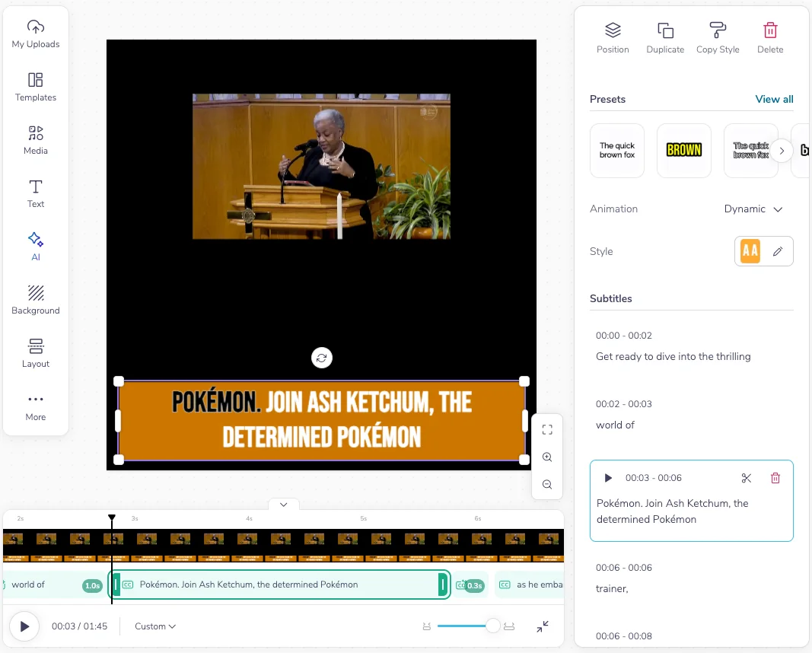
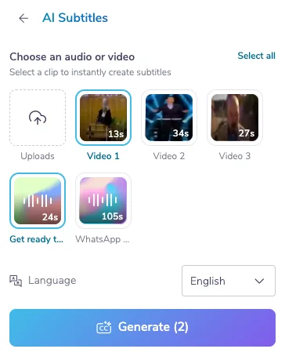
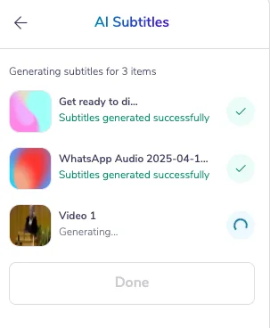
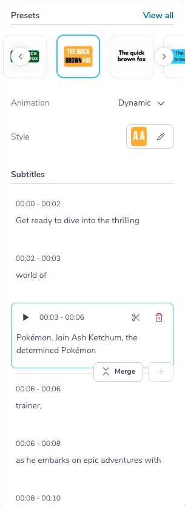
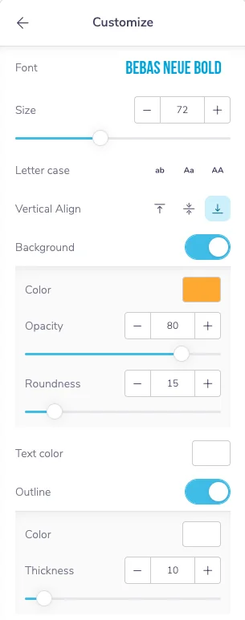
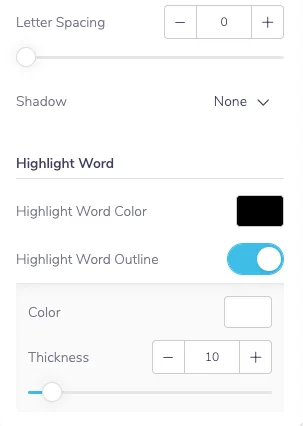
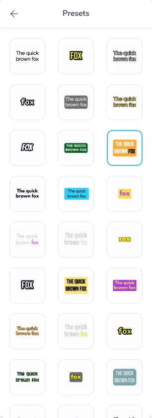

AI subtitles and captions







Subtitling for audio and video, which I architected: AI transcription with OpenAI, a React timeline for syncing and editing each line, and a custom Fabric.js grouped object that renders styled, animated, word-highlighted captions without slowing the canvas.
- React
- TypeScript
- Fabric.js
- Redux
- OpenAI speech-to-text